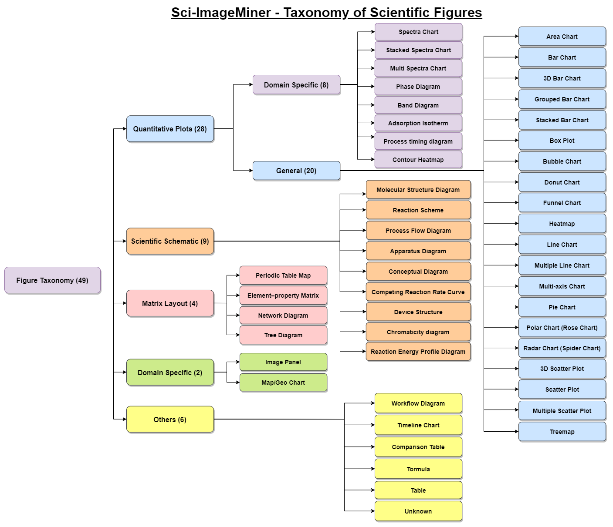

Figure Classification
Classify each scientific figure into a predefined taxonomy label. F1-score is the primary ranking metric.
ICDAR 2026 Competition Paper
TIB - Leibniz Information Centre for Science and Technology · L3S Research Center
Sci-ImageMiner is an expert-annotated benchmark and ICDAR 2026 competition for scientific figure comprehension in atomic layer deposition and atomic layer etching literature. The benchmark tests multimodal systems across four complementary tasks: figure classification, structured data table extraction, figure summarization, and visual question answering.
The competition attracted 68 active participants and 1,263 public/private submissions from 9 January 2026 to 8 April 2026. Results indicate that current multimodal models handle classification and summarization more effectively than data extraction and scientific visual reasoning, leaving open challenges for domain-aware multimodal AI.
Benchmark
Classify each scientific figure into a predefined taxonomy label. F1-score is the primary ranking metric.
Reconstruct chart data as structured Markdown tables, evaluated with RMS and TEDS.
Generate concise, factually grounded summaries of key scientific insights using ROUGE and BERTScore-F1.
Answer domain-specific question-answer pairs spanning factoid, yes/no, list, and paragraph responses.
The GitHub release contains expert-reviewed figure images and JSON annotations for train, dev, and gold-standard test data. Source article PDFs are intentionally excluded from GitHub distribution.
| Split | Papers | Figures |
|---|---|---|
| Train | 126 | 1,170 |
| Dev | 20 | 201 |
| Test | 59 | 580 |
| Total | 205 | 1,951 |
Figure Taxonomy
The taxonomy covers plots, spectra, reaction schemes, molecular structures, apparatus diagrams, image panels, and other figure types common in ALD/E publications.

Codabench
These tables are refreshed from public Codabench phase leaderboard APIs by the GitHub Pages workflow. Follow each task link for the canonical results tab.
The strongest systems combined large vision-language models with explicit task structure: hierarchical classifiers, context-augmented prompting, synthetic chart-to-table data, retrieval-augmented context, alignment training, and answer-type-specific VQA pipelines.
Classification and summarization were comparatively tractable, while table extraction and scientific VQA remained more difficult because they require numerical precision, visual grounding, and domain-aware reasoning.
@article{ahmed2026icdar,
title = {ICDAR 2026 Competition on Information Extraction from
Atomic Layer Deposition/Etching (ALD/E) Scientific Figures},
author = {Ahmed, Fahad and Auer, S{\"o}ren and D'Souza, Jennifer},
journal = {arXiv preprint arXiv:2607.26848},
year = {2026},
url = {https://arxiv.org/abs/2607.26848}
}Sci-ImageMiner was funded by the NFDI4DataScience initiative under the German Research Foundation (DFG, Grant ID: 460234259). The work was conducted in the context of the AWASES initiative with collaborators across Eindhoven University, Leibniz University Hannover's L3S Research Centre, and the University of Warwick.